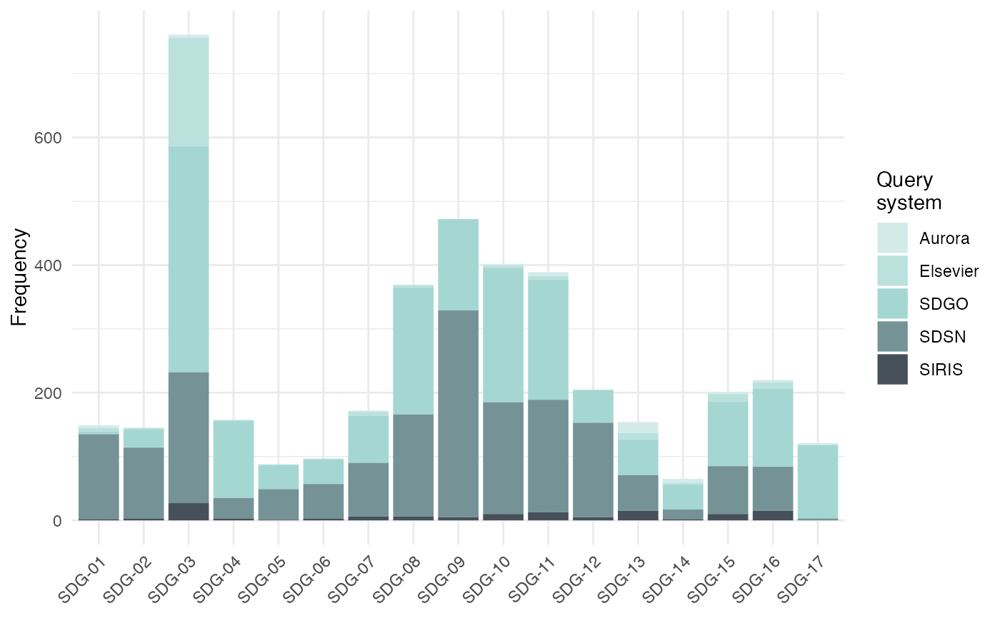

The text2sdg package provides functions for detecting SDGs in text, as well as for analyzing and visualization the hits found in text. The following provides a brief overview of the contents of the package.
detect_sdg detects SDGs in text using up to five different
query systems: Aurora, Elsevier, SIRIS, SDSN, and OSDG
detect_any detects SDGs in text using self-specified queries
utilizing the lucene-style syntax of the
corpustools
package.
plot_sdg visualizes the relative frequency of SDG hits across
query systems.
crosstab_sdg calculates cross tables of correlations between
either the query systems or the different SDGs.
projects contain random selection of research project
descriptions from the P3 database of the Swiss National Science Foundation.
aurora_queries, elsevier_queries,
siris_queries, sdsn_queries, auckland_queries and
sdgo_queries contain a mapping of SDGs and search queries
as they are employed in the respective systems.
# \donttest{
# detect SDGs using default systems
hits <- detect_sdg_systems(projects)
#> Running Aurora
#> Running Elsevier
#> Running Auckland
#> Running SIRIS
#' # detect SDGs using all five systems
hits <- detect_sdg_systems(projects,
system = c("Aurora", "Elsevier", "SIRIS", "SDSN", "SDGO")
)
#> Running Aurora
#> Running Elsevier
#> Running SIRIS
#> Running SDSN
#> Running SDGO
# visualize SDG frequencies
plot_sdg(hits)
#> 2511 duplicate hits removed. Set remove_duplicates = FALSE to retain duplicates.

# correlations between systems
crosstab_sdg(hits)
#> Aurora Elsevier SDGO SDSN SIRIS
#> Aurora 1.0000000 0.2434814 0.1386527 0.1218384 0.3028867
#> Elsevier 0.2434814 1.0000000 0.2919052 0.2258820 0.2702591
#> SDGO 0.1386527 0.2919052 1.0000000 0.3531476 0.1854036
#> SDSN 0.1218384 0.2258820 0.3531476 1.0000000 0.1935117
#> SIRIS 0.3028867 0.2702591 0.1854036 0.1935117 1.0000000
# correlations between SDGs
crosstab_sdg(hits, compare = "sdgs")
#> SDG-01 SDG-02 SDG-03 SDG-04 SDG-05 SDG-06
#> SDG-01 1.00000000 0.47243260 0.05377124 0.05960021 0.11694397 0.17689403
#> SDG-02 0.47243260 1.00000000 0.08874120 0.06917626 0.06403653 0.17167897
#> SDG-03 0.05377124 0.08874120 1.00000000 0.22115676 0.17081657 0.04264144
#> SDG-04 0.05960021 0.06917626 0.22115676 1.00000000 0.13771788 0.07550215
#> SDG-05 0.11694397 0.06403653 0.17081657 0.13771788 1.00000000 0.10773742
#> SDG-06 0.17689403 0.17167897 0.04264144 0.07550215 0.10773742 1.00000000
#> SDG-07 0.07842569 0.12861946 0.01594629 0.09176819 0.05098589 0.19088388
#> SDG-08 0.15722789 0.16209480 0.22222210 0.17926297 0.09185875 0.16165248
#> SDG-09 0.32323357 0.29133072 0.17619482 0.14773401 0.14634302 0.18358260
#> SDG-10 0.17956575 0.15225795 0.34461688 0.26668702 0.20000820 0.10939990
#> SDG-11 0.20423511 0.22395873 0.22204222 0.20143305 0.15753089 0.32517901
#> SDG-12 0.23882648 0.27512454 0.09694438 0.05418890 0.06949188 0.29477153
#> SDG-13 0.05496570 0.07877807 -0.02848180 0.04285162 0.01425682 0.20697251
#> SDG-14 0.05442432 0.08850223 0.03394400 0.01954488 0.02335111 0.14939543
#> SDG-15 0.07469163 0.17837071 0.14007452 0.05016042 0.03132997 0.21482130
#> SDG-16 0.13650534 0.11018098 0.16579452 0.26168407 0.33141916 0.13499705
#> SDG-17 -0.01741154 0.01580426 0.25585998 0.24782207 0.04794814 0.04155092
#> SDG-07 SDG-08 SDG-09 SDG-10 SDG-11 SDG-12
#> SDG-01 0.078425692 0.15722789 0.32323357 0.17956575 0.2042351 0.23882648
#> SDG-02 0.128619459 0.16209480 0.29133072 0.15225795 0.2239587 0.27512454
#> SDG-03 0.015946287 0.22222210 0.17619482 0.34461688 0.2220422 0.09694438
#> SDG-04 0.091768192 0.17926297 0.14773401 0.26668702 0.2014330 0.05418890
#> SDG-05 0.050985889 0.09185875 0.14634302 0.20000820 0.1575309 0.06949188
#> SDG-06 0.190883884 0.16165248 0.18358260 0.10939990 0.3251790 0.29477153
#> SDG-07 1.000000000 0.12747932 0.28479413 0.10472055 0.2190218 0.27587686
#> SDG-08 0.127479323 1.00000000 0.35251130 0.33051644 0.2693716 0.13457737
#> SDG-09 0.284794133 0.35251130 1.00000000 0.31469590 0.3145663 0.30658118
#> SDG-10 0.104720552 0.33051644 0.31469590 1.00000000 0.2837277 0.14301861
#> SDG-11 0.219021802 0.26937161 0.31456628 0.28372772 1.0000000 0.31011192
#> SDG-12 0.275876855 0.13457737 0.30658118 0.14301861 0.3101119 1.00000000
#> SDG-13 0.397037368 0.06693026 0.15272320 0.03730426 0.1654065 0.12959628
#> SDG-14 0.154203297 0.08791454 0.09459597 0.08586034 0.1170959 0.09775298
#> SDG-15 0.134668279 0.17971335 0.21069413 0.13487097 0.1896257 0.19043761
#> SDG-16 0.038289774 0.22900007 0.17124607 0.24454931 0.2561869 0.08213455
#> SDG-17 -0.009755392 0.13735910 0.03884005 0.20570856 0.1757141 0.06846304
#> SDG-13 SDG-14 SDG-15 SDG-16 SDG-17
#> SDG-01 0.054965704 0.054424319 0.07469163 0.136505340 -0.017411542
#> SDG-02 0.078778070 0.088502232 0.17837071 0.110180978 0.015804265
#> SDG-03 -0.028481801 0.033943997 0.14007452 0.165794519 0.255859979
#> SDG-04 0.042851617 0.019544879 0.05016042 0.261684065 0.247822074
#> SDG-05 0.014256824 0.023351115 0.03132997 0.331419161 0.047948138
#> SDG-06 0.206972513 0.149395431 0.21482130 0.134997052 0.041550924
#> SDG-07 0.397037368 0.154203297 0.13466828 0.038289774 -0.009755392
#> SDG-08 0.066930264 0.087914542 0.17971335 0.229000069 0.137359096
#> SDG-09 0.152723205 0.094595973 0.21069413 0.171246067 0.038840047
#> SDG-10 0.037304257 0.085860337 0.13487097 0.244549312 0.205708557
#> SDG-11 0.165406506 0.117095907 0.18962575 0.256186926 0.175714122
#> SDG-12 0.129596280 0.097752977 0.19043761 0.082134545 0.068463040
#> SDG-13 1.000000000 0.292688371 0.26688113 0.008503651 -0.003516404
#> SDG-14 0.292688371 1.000000000 0.22901423 -0.006388333 0.010002345
#> SDG-15 0.266881126 0.229014229 1.00000000 0.069125302 0.111535430
#> SDG-16 0.008503651 -0.006388333 0.06912530 1.000000000 0.179953553
#> SDG-17 -0.003516404 0.010002345 0.11153543 0.179953553 1.000000000
# }